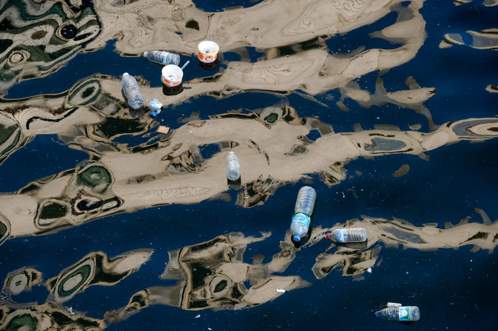

About this Site

plastic in the ocean by Pixabay.
Plastic waste severely pollutes marine ecosystems, threatening the health of oceans and wildlife. Marine animals often ingest or become entangled in plastic, leading to injuries or death. This pollution disrupts the balance of ecosystems and harms coastal communities dependent on the sea. Urgent action is needed to reduce plastic waste and protect ocean life.